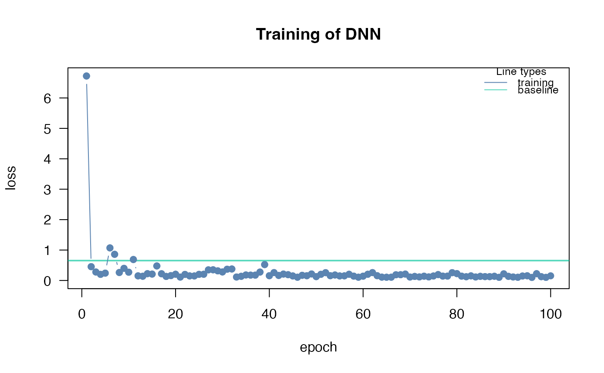
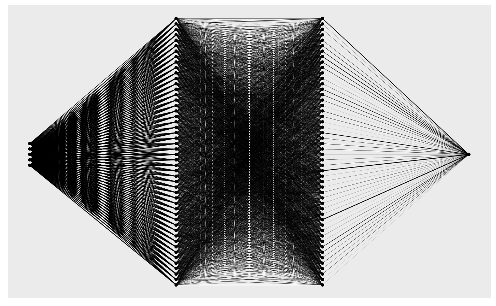

Creates graph plot which gives an overview of the network architecture.
Source:R/dnn.R
plot.citodnn.RdCreates graph plot which gives an overview of the network architecture.
Arguments
- x
a model created by
dnn- node_size
size of node in plot
- scale_edges
edge weight gets scaled according to other weights (layer specific)
- ...
no further functionality implemented yet
- which_model
which model from the ensemble should be plotted
Examples
# \donttest{
if(torch::torch_is_installed()){
library(cito)
set.seed(222)
validation_set<- sample(c(1:nrow(datasets::iris)),25)
# Build and train Network
nn.fit<- dnn(Sepal.Length~., data = datasets::iris[-validation_set,])
plot(nn.fit)
}
#> Loss at epoch 1: 3.445167, lr: 0.01000

#> Loss at epoch 2: 0.180815, lr: 0.01000
#> Loss at epoch 3: 0.195475, lr: 0.01000
#> Loss at epoch 4: 0.213623, lr: 0.01000
#> Loss at epoch 5: 0.236563, lr: 0.01000
#> Loss at epoch 6: 0.154708, lr: 0.01000
#> Loss at epoch 7: 0.236242, lr: 0.01000
#> Loss at epoch 8: 0.190542, lr: 0.01000
#> Loss at epoch 9: 0.217870, lr: 0.01000
#> Loss at epoch 10: 0.149010, lr: 0.01000
#> Loss at epoch 11: 0.175082, lr: 0.01000
#> Loss at epoch 12: 0.155620, lr: 0.01000
#> Loss at epoch 13: 0.311527, lr: 0.01000
#> Loss at epoch 14: 0.231197, lr: 0.01000
#> Loss at epoch 15: 0.214007, lr: 0.01000
#> Loss at epoch 16: 0.577211, lr: 0.01000
#> Loss at epoch 17: 0.145501, lr: 0.01000
#> Loss at epoch 18: 0.156580, lr: 0.01000
#> Loss at epoch 19: 0.178079, lr: 0.01000
#> Loss at epoch 20: 0.162045, lr: 0.01000
#> Loss at epoch 21: 0.182124, lr: 0.01000
#> Loss at epoch 22: 0.239821, lr: 0.01000
#> Loss at epoch 23: 0.131653, lr: 0.01000
#> Loss at epoch 24: 0.251984, lr: 0.01000
#> Loss at epoch 25: 0.177313, lr: 0.01000
#> Loss at epoch 26: 0.198172, lr: 0.01000
#> Loss at epoch 27: 0.156681, lr: 0.01000
#> Loss at epoch 28: 0.136898, lr: 0.01000
#> Loss at epoch 29: 0.166885, lr: 0.01000
#> Loss at epoch 30: 0.136860, lr: 0.01000
#> Loss at epoch 31: 0.162512, lr: 0.01000
#> Loss at epoch 32: 0.164134, lr: 0.01000
#> Loss at epoch 33: 0.178538, lr: 0.01000
#> Loss at epoch 34: 0.165918, lr: 0.01000
#> Loss at epoch 35: 0.155334, lr: 0.01000
#> Loss at epoch 36: 0.153409, lr: 0.01000
#> Loss at epoch 37: 0.136303, lr: 0.01000
#> Loss at epoch 38: 0.162525, lr: 0.01000
#> Loss at epoch 39: 0.145325, lr: 0.01000
#> Loss at epoch 40: 0.132630, lr: 0.01000
#> Loss at epoch 41: 0.198492, lr: 0.01000
#> Loss at epoch 42: 0.183979, lr: 0.01000
#> Loss at epoch 43: 0.191974, lr: 0.01000
#> Loss at epoch 44: 0.126183, lr: 0.01000
#> Loss at epoch 45: 0.224056, lr: 0.01000
#> Loss at epoch 46: 0.181917, lr: 0.01000
#> Loss at epoch 47: 0.147204, lr: 0.01000
#> Loss at epoch 48: 0.129586, lr: 0.01000
#> Loss at epoch 49: 0.170355, lr: 0.01000
#> Loss at epoch 50: 0.148139, lr: 0.01000
#> Loss at epoch 51: 0.166895, lr: 0.01000
#> Loss at epoch 52: 0.183577, lr: 0.01000
#> Loss at epoch 53: 0.132531, lr: 0.01000
#> Loss at epoch 54: 0.140603, lr: 0.01000
#> Loss at epoch 55: 0.182773, lr: 0.01000
#> Loss at epoch 56: 0.168213, lr: 0.01000
#> Loss at epoch 57: 0.112436, lr: 0.01000
#> Loss at epoch 58: 0.116623, lr: 0.01000
#> Loss at epoch 59: 0.382245, lr: 0.01000
#> Loss at epoch 60: 0.144131, lr: 0.01000
#> Loss at epoch 61: 0.126356, lr: 0.01000
#> Loss at epoch 62: 0.128764, lr: 0.01000
#> Loss at epoch 63: 0.107893, lr: 0.01000
#> Loss at epoch 64: 0.108774, lr: 0.01000
#> Loss at epoch 65: 0.152627, lr: 0.01000
#> Loss at epoch 66: 0.153796, lr: 0.01000
#> Loss at epoch 67: 0.120291, lr: 0.01000
#> Loss at epoch 68: 0.131734, lr: 0.01000
#> Loss at epoch 69: 0.127446, lr: 0.01000
#> Loss at epoch 70: 0.194481, lr: 0.01000
#> Loss at epoch 71: 0.113362, lr: 0.01000
#> Loss at epoch 72: 0.202951, lr: 0.01000
#> Loss at epoch 73: 0.111314, lr: 0.01000
#> Loss at epoch 74: 0.147254, lr: 0.01000
#> Loss at epoch 75: 0.121025, lr: 0.01000
#> Loss at epoch 76: 0.114808, lr: 0.01000
#> Loss at epoch 77: 0.116066, lr: 0.01000
#> Loss at epoch 78: 0.144154, lr: 0.01000
#> Loss at epoch 79: 0.194243, lr: 0.01000
#> Loss at epoch 80: 0.161998, lr: 0.01000
#> Loss at epoch 81: 0.119302, lr: 0.01000
#> Loss at epoch 82: 0.187440, lr: 0.01000
#> Loss at epoch 83: 0.202522, lr: 0.01000
#> Loss at epoch 84: 0.150351, lr: 0.01000
#> Loss at epoch 85: 0.101442, lr: 0.01000
#> Loss at epoch 86: 0.109706, lr: 0.01000
#> Loss at epoch 87: 0.148070, lr: 0.01000
#> Loss at epoch 88: 0.121852, lr: 0.01000
#> Loss at epoch 89: 0.137903, lr: 0.01000
#> Loss at epoch 90: 0.100751, lr: 0.01000
#> Loss at epoch 91: 0.107110, lr: 0.01000
#> Loss at epoch 92: 0.111903, lr: 0.01000
#> Loss at epoch 93: 0.192536, lr: 0.01000
#> Loss at epoch 94: 0.157523, lr: 0.01000
#> Loss at epoch 95: 0.204859, lr: 0.01000
#> Loss at epoch 96: 0.146112, lr: 0.01000
#> Loss at epoch 97: 0.119402, lr: 0.01000
#> Loss at epoch 98: 0.167152, lr: 0.01000
#> Loss at epoch 99: 0.152942, lr: 0.01000
#> Loss at epoch 100: 0.200287, lr: 0.01000

# }